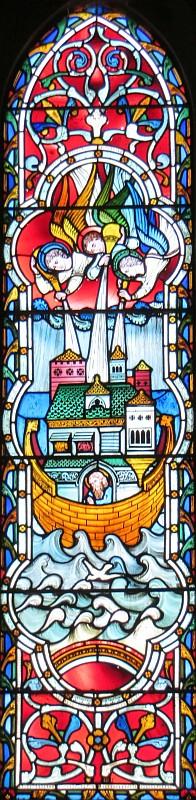

 Et l'Bouôn Dgieu dit à Noué, "Prend toute ta fanmil'ye et allez dans l'baheur, car i' n'y'a raîque té d'chutte généthâtion qué j'vai tch'est honnête.
Prend sept pathes dé châque bête puthe, lé mâle et la feunmelle, et eune pathe dé châque bête împuthe, lé mâle et la feunmelle;
et sept pathes du ouaîthelîn, lé mâle et la feunmelle, à seule fîn qu'lus p'tchiots piêssent vivre sus la tèrre.
Car en sept jours j'm'en vais vèrser d'la plyie sus la tèrre pouor quarante jours et quarante nyits à seule fîn d'passecrithe tout chein tchi vit qu'j'ai grée sus la tèrre.
Et Noué fit tout chein qu'lé Bouôn Dgieu lî'avait c'mandé.
Noué avait siêx chents ans quand l's ieaux vîntent couvri la tèrre.
Et Noué, acanté ses fis et sa bouonnefemme et les femmes à ses fis, il' allîtent dans l'baheur, viyant l's ieaux tchi montaient.
Coumme lé Bouôn Dgieu avait c'mandé, dans lus pathes, lé mâle et la feunmelle, les bêtes puthes et împuthes et l'ouaîthelîn et tout ch'qu'i' y'a sus la tèrre allîtent dans l'baheur acanté Noué.
Et auprès sept jours, l's ieaux vîntent couvri la tèrre.
Quand Noué avait siêx chents ans, au deuxième mais et l'dgiêx-septchième jour, les r'ssources du fôssé êcliatchîtent et l's êcliûses du ciel ouvrîtent;
et i' tchiyaient d'la plyie à vèrse pouor quarante jours et quarante nyits.
Chu jour-là Noué, acanté Sem, Cham et Japhet, ses fis, et sa bouonnefemme et les femmes à ses fis, allîtent dans l'baheur;
et acanté ieux, toutes les manniéthes dé bêtes et bestchias, et tout chein tchi va sus la tèrre et toutes les manniéthes dé ouaîthelîn.
Il' allîtent acanté Noué dans l'baheur, dans lus pathes dé tout chein tchi vivait et tch'avait l'soûffl'ye d'la vie.
Lé mâle et la feunmelle dé tout chein tchi vivait y'allîtent, coumme lé Bouôn Dgieu avait c'mandé, et l'Seigneu freunmit l'baheur.
Et pouor quarante jours l's ieaux couvraient toute la tèrre et l's ieaux montaient et êl'vit l'baheur haut sus la tèrre
Et l's ieaux n'yîtent tout et montîtent bein hautes sus la tèrre, et l'baheur fliottaient sus l's ieaux
Et l's ieaux n'yîtent tout sus la tèrre et touos les monts souos l'ciel fûtent couvèrts.
Les ieaux montîdrent et couvrîdrent les montangnes d'eune avanteu d'dans les sept mètres. Châque criatuthe vivante tch'allait sus la tèrre péthit: l'ouaîth'lîn, l'bestchias, l's annimaux sauvages, toutes les criatuthes tchi lus affliotchaient partoute la tèrre, et touos les gens. Tout chein sus la tèrre secque tch'avait l'soûffl'ye d'la vie dans ses nâsil'yes mouothit. Tout chein tchi vivait sus la fache d'la tèrre fut passecrit; les gens et les bêtes et les criatuthes tchi grappinnent dans l'aithe et l'ouaîth'lîn fûdrent passecrits d'sus la tèrre. Raîque Noué restait, li et les cheins acanté li dans l'baheur.
Les ieux êcliûthaient la tèrre pouor chent chînquante jours.
Viyiz étout:
{kind=link}